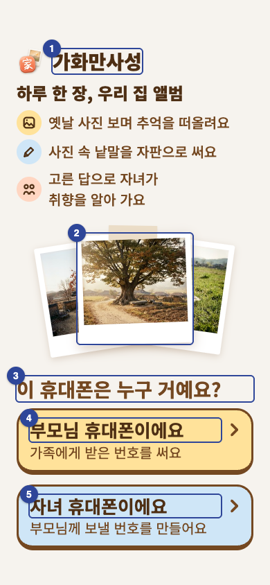
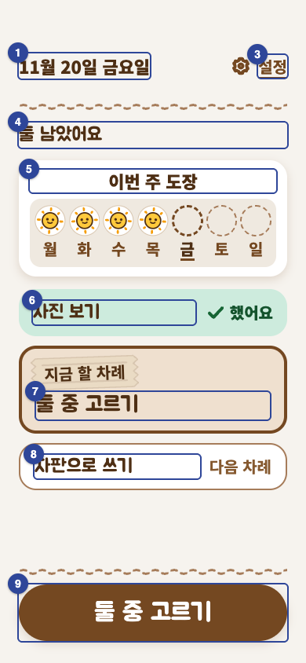
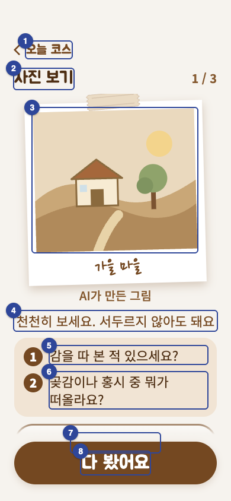
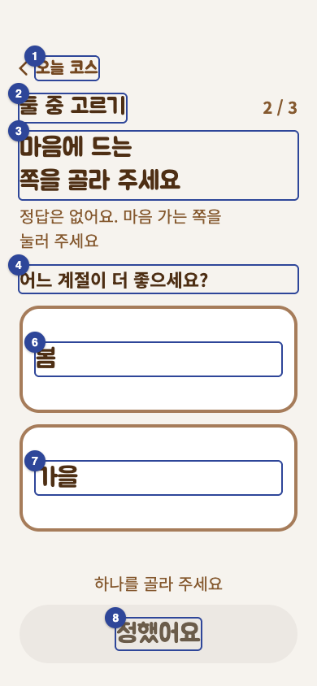
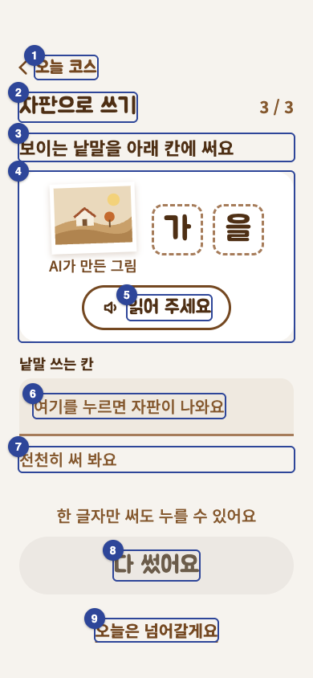
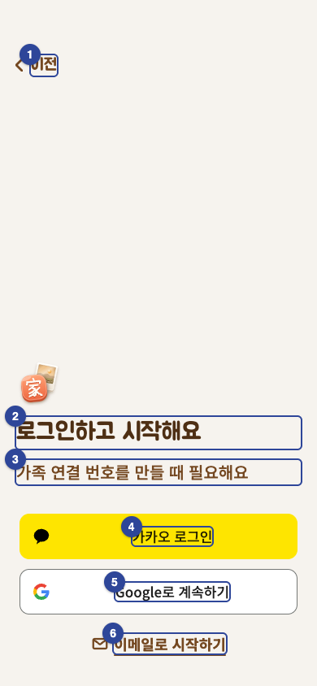
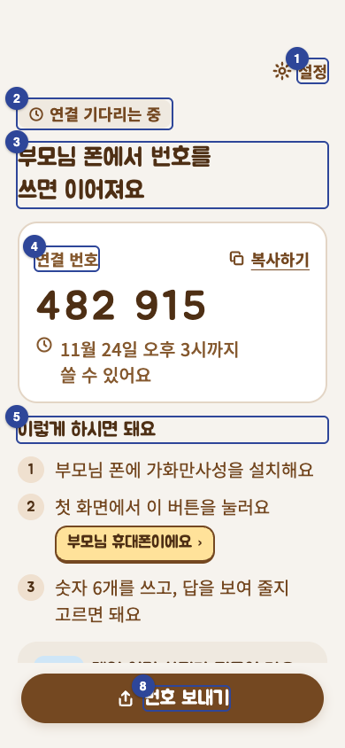
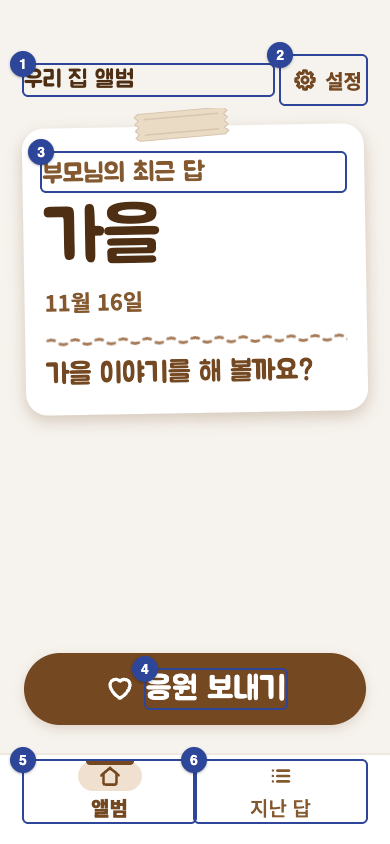

TalkBack 읽기 순서 · 첫 실행·어르신 코스·자녀 핵심
공통: 화면에 들어오면 첫 포커스는 제목 · 장식(아이콘·테이프·심볼)은 읽지 않음 · 비활성 버튼은 이유를 힌트로 · 시트가 열리면 시트 제목으로, 닫히면 연 버튼으로 · 상태 변화는 한 번만 알림. 전문 talkback-spec.md
첫 화면

1 워드마크+소개 한 덩어리 → 2 사진 묶음(AI가 만든 그림) → 3 질문 → 4·5 버튼
P3 코스 홈

1 날짜 → 2 음악 켜기(PX_music 보드 자리) → 3 설정 → 4 한 줄 → 5 도장(찍은 요일) → 6~8 단계 행 → 9 큰 버튼
P4 사진 보기

돌아가기 → 제목(3단계 중 1단계) → 사진 라벨 → 안내 → 질문 2 → 읽어 주세요 → 다 봤어요
P5 둘 중 고르기

제목 → 안내 → 질문 → 5 읽어 주세요(PX_read_aloud 자리) → 선택 카드(라디오) → 정했어요(비활성 이유 힌트)
P6 자판으로 쓰기

낱말 카드 한 덩어리("쓸 낱말, 가을, 두 글자") → 입력칸 → 다 썼어요 → 넘어가기
C0 로그인

제목 → 안내 → 카카오 → Google → 이메일
C3 연결 대기

첫 포커스 3 제목. 6 알림 줄·7 예시 카드는 스크롤 아래
C4 앨범

제목 → 설정 → 최근 답 카드 한 덩어리 → 응원 보내기 → 탭